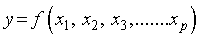
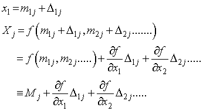
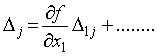
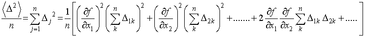
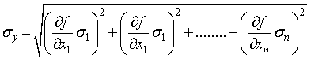

誤差の伝搬法則
まず，ある関数，を設定します．

それぞれの，ｘ，が正しい場合には，y，は真の値をとりますが，実際にはそれぞれに誤差を含みます．
そこで，ｊ回目の測定値を，m1j, m2j.....とすると，

と書き換えることができます（2番目の式変形は，ここ，をご覧ください)．

とすると，

となりますので，この二乗の総和の平均をとると，

となります．
後半の項目

は誤差が正規分布に従うとすると，おのおの正，負をとる確率は等しくなるので，結局ゼロとなります．
従って，ｙ，の値の平均二乗誤差を，σy，とすると，

と計算することができます．
では，具体的な計算をしていきましょう．